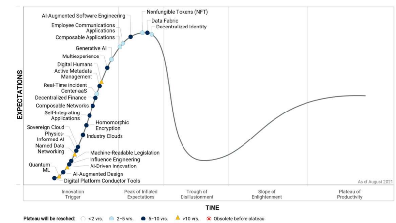

Abstract
A reflection on creating a teacher-focused vodcast introducing the EF Immersion Challenge - from CALL/MALL evaluation and the hype cycle to design decisions, production challenges and lessons for future video materials.
Teachers go to great lengths in developing, designing, and adapting materials for their students, and they are multitaskers in the way they manage students, resources, and time (Levy and Stockwell, 2006). Research suggests that teachers can find Computer / Mobile Assisted Language Learning (CALL/MALL) products intimidating or challenging (O’Bryan and Hegelheimer, 2007). Video podcasts (vodcasts) are preferable to podcasts due to the visual element, which makes them less intimidating as teachers can see the product, making the instructional goals clearer (O’Bryan and Hegelheimer, 2007). In addition to this, the way vodcasting has changed and revolutionised ESL classrooms made such a difference for both learners and teachers in the last decade (Tomé and Richters, 2020). This vodcast is designed to provide instruction for teachers on how to create innovative materials which are interesting, challenging, and rewarding for both the teacher and the learner. Vodcasting could help certain CALL and/or MALL products become normalised as it helps to review and integrate innovative materials into the classroom (Chambers and Bax, 2006). The learning goal of this vodcast is to enable teachers to use the EF Immersion Challenge product efficiently and effectively with their students inside and/or outside the classroom setting. This CALL/MALL product was created to engage, motivate, and stimulate learners to improve their language skills by using what they learned in the classroom out in the real world. This type of learning is important to students as the product creates new opportunities to interact with different learners each time it is used (Gikas, 2011). This vodcast enables teachers to:
The EF Immersion challenge was chosen after a CALL evaluation form was completed (see appendix 2) and the product received a 99.2% score, suggesting it is learner and teacher fit (see figure 1).

In developing the vodcast, it was important to provide the aims of the episode to generate interest and compare the content of the EF Immersion Challenge to Kahoot (an existing CALL solution) to familiarise the audience with the product. In the last decade, Kahoot has become a part of classrooms, boardrooms, and offices (Kahoot!, 2019). Gartner (2014) illustrates that many emerging technologies do not survive the hype cycle, which is a process people go through when a new product is released as they experience a range of expectations (Innovation Trigger / Peak of Inflated expectations), disappointments (Trough of Disillusions), and certain capabilities of a product through trial and error (Slope of Enlightenment/Plateau of Productivity), see figure 2.
When people encounter a new product, the hope is that it leads straight to the Enlightenment and Plateau of Productivity stage, which is when a product becomes normalised (Chambers and Bax, 2006; Gartner, 2014) like Kahoot. Data shows (figure 2) that reaching the Plateau of Productivity for some areas can take years. However, this vodcast could cause the Innovation Trigger as a desire to use the EF Immersion Challenge if teachers are familiar with Kahoot, which could lead to a shorter adjustment period, as the audience receives the information visually on how to navigate the product (i.e., templates, how to search, create and duplicate templates). Showing an example of an existing lesson created by the vodcaster and the responses of learners shows teachers the benefits of the activities, assessment feedback, and learning outcomes for both learners and teachers (Biggs and Tang, 2011). The lessons created allow learners to be creative and use the language outside the classroom without a teacher present, which allows learners to express the language naturally (Gikas and Grant, 2013). However, teachers still get to monitor students’ output and give feedback through submissions on the website.
It was also necessary to provide suggestions on where the product may need some improvements (e.g., learners will always try to bend the rules to avoid certain tasks) as honesty contributes to teachers’ attitudes and affect alignment (Biggs and Tang, 2011). Concluding the vodcast on a positive note with how learners complete the challenge and accomplish their learning goals based on what their teacher has created, leaves the audience with a sense of reward from both perspectives.
The following can trigger teacher curiosity and provide motivation to use the product:
I utilised 90% of the course content during the creation of this vodcast. The learning material is relevant, applicable, and made the creation of this vodcast a wonderful experience. The evaluation form (from assessment 2) made starting this project easier because it gave a clear indication that the EF Immersion challenge product was good and worthy of review for teachers and learners. I did adapt the evaluation form based on the example lesson provided in the vodcast to amplify teachers’ and learners’ needs.
My prior real-world experience with the product made producing the vodcast easier and more relevant as I could demonstrate real-world feedback from the usage. Providing those steps helped me to show teachers how to use the product with a seamless procedure (see appendix 1). This will hopefully help other teachers to create lessons on this platform as it will reflect on their learners’ motivation, interest, and language use as the product has a holistic focus.
Challenging production aspects included the technical elements of recording myself, sourcing the background music, and editing the video. I used a product called Ableton Live which has a relatively steep learning curve. Another challenge was focussing on the pertinent information. My initial take was 40-minutes. I had to be extremely selective and managed to reduce that to 7-minutes. If I did this again, perhaps I would take 10-minutes to elaborate more, or maybe 2x5-minute videos, each addressing different sections (i.e., creating a new lesson and student results) in more depth. I could use YouTube analytics to see which version audiences prefer.
In conclusion, this assessment has given me the confidence to create more videos and materials for teachers and learners, because sharing our experiences will create better learning environments for our students and ourselves.
Biggs, J., & Tang, C. (2011). Teaching for Quality Learning at University. Maidenhead, UK: Open University Press.
Chambers, A., & Bax, S. (2006). Making CALL work: Towards normalisation. System, 34(4),465-479.
Gartner (2014). Hype Cycle for Emerging Technologies Maps the Journey to Digital Business. Retrieved from http://www.gartner.com/newsroom/id/2819918
Gikas, J. (2011). Understanding change: Implementing mobile computing devices in higher education (Order No. 3485889). Available from Education Collection; ProQuest Dissertations & Theses Global. (908420706). https://www.proquest.com/dissertations-theses/understanding-change-implementing-mobile/docview/908420706/se-2
Gikas, J & Grant, M. (2013). Mobile computing devices in higher education: Student perspectives on learning with cell phones, smartphones & social media. Internet and Higher Education, 19, 18-26
Kahoot! (2019). About Kahoot! | Company History & Key Facts. [online] Kahoot! Available at: https://kahoot.com/company/.
Levy, M. & Stockwell, G. (2006). CALL Dimensions: Options & issues in computer-assisted language learning. Mahwah, NJ: Erlbaum. Chapter 9.
O’Bryan, A., & Hegelheimer, V. (2007). Integrating CALL into the classroom: the role of podcasting in an ESL listening strategies course. The ReCALL Journal, 19(2), 162-180.
Tomé Díez, M., & Richters, M. A. (2020). Podcasting as a tool to develop speaking skills in the foreign language classroom.
| Name: | EF Immersion Challenge |
|---|---|
| Choice of technology? | CALL and MALL |
| References on the topic (if known) | EF Immersion Challenge |
| Interview/debate ideas? | N/A |
| Pedagogical approach? | EF Immersion Challenge combines language learning, cultural immersion, and technology to create team activities ("challenges") for students to practice their target language in authentic real-world contexts. Seeking to make the most of the study abroad experience, it provides opportunities for students to engage with the local community, socialise with fellow students and leave their comfort zone. Through this, it aims to improve students' communication and teamwork skills, cultural knowledge, and course satisfaction. |
| Engagement with the audience? | Each challenge is composed of a series of tasks the students are asked to complete as a team. A task may be an instruction, a question, or information which prompts the student to reply (by typing a text answer, uploading an image/video/voice recording, selecting multiple-choice options, etc.). Challenges are completed in teams set by the system to optimise grouping people of different first languages, hence encouraging the students to communicate in the target language they are learning. They may also be completed individually. Learners work together and practice language use, get feedback from their teacher, to then produce that language in the real world. Learners then record themselves, listen to their recordings, and write down what they hear. This allows them to self-correct their errors. Creating presentations to showcase their findings to their classmates gives learners a full-circle moment of accomplishment. |
| Language skill focus? | All skills |
| Introduction content (50 secs) | Introduction of myself and the product on why to use it and podcasts aims |
| Content 1 (0:50-1:55) | Explaining what the program is and who it is for and what the learners need to use the product |
| Content 2 (1:55-2:40) | Comparing the content to Kahoot to familiarise the audience with the product and show them how to navigate the website (i.e., templates, how to search, create, duplicate |
| Content 3 (2:40-3:30) | Example of a lesson, how it works, how to edit, how to duplicate, create questions, choices of media students can upload |
| Content 4 (3:30-5:35) | What it looks like when learners upload their answers in the Challenges completed section, to see the results and why it is beneficial for teachers and learners to use. Teachers can create lessons where learners use all skills and the teacher sees every action without being present. Showing examples of where it went wrong as learners will always try to bend the rules, being honest is important as nobody is perfect. |
| Content 5 (5:35-6:07) | Positive ending: learners send a video to their teacher to let them know what they have learned by completing this challenge based on what the teacher has created. There is a feeling of reward from both sides. |
| Conclusion content (6:07-7:00) | Showing empathy as the task may sound challenging but comparing it to Kahoot may stimulate teachers to use it as Kahoot has become the most normalised product in the classroom. Letting them know not to give up as it is normal to be scared. Ending this episode and giving information about next week’s topic to engage the listeners to listen again. |
Appendix 2
CALL/MALL Evaluation Checklist for EF Immersion Challenge
| Objective: Provide students with a platform where they can practice the CAE exam training for reading skills. |
|---|
| Name of Evaluator: | Sermin Erden | Date: | 10 October 2022 |
|---|
| Identification of the website | |
|---|---|
| Website: | EF Immersion Challenge |
| Website purpose: | Teachers create interactive lesson plans |
| Website owners: | EF International Language Schools |
| URL: | EF Immersion Challenge |
| Put a tick (✓) in the corresponding column | Yes | No |
|---|---|---|
| 1. Purpose: Is the purpose clear? Is the content in line with the purpose? Is the Website appropriate for its targeted learner? | ✓ | |
| 2. Currency: Is the Website current? Is the Website updated regularly? | ✓ | |
| 3. Usefulness: Does the Website provide useful information? Are the language activities or tasks useful? | ✓ | |
| 4. Organization: Is the Website well organised and presented? Is the Website interesting to look at and explore? Are screen displays effective? | ✓ | |
| 5. Authenticity: Are the learning materials authentic? Are authentic materials provided in appropriate contexts? | ✓ | |
| 6. Feedback: Is feedback on learner responses encouraging? Is error handling meaningful and helpful? | ✓ | |
| 7. Integration: Can the learning materials be integrated into a curriculum? Does the content fit with curricular goals? | ✓ | |
| 8. Communication: Can the user communicate with real people online through the Website? Is online help available? | ✓ | |
| 9. Interactivity: Is the Website interactive? Are methods for user input effectively employed? | ✓ | |
| 10. Navigation: Is the Website easy to navigate? Are on-screen instructions easy to follow? Is it easy to retrieve information? Are hyperlinks given properly? | ✓ |
| Total Score: 9 /10 |
|---|
| Put a tick (✓) in the corresponding column | 1 | 2 | 3 | 4 | 5 |
|---|---|---|---|---|---|
| 1. Does the software incorporate manageable & meaningful input? | ✓ | ||||
| 2. How is the new language introduced? Is sufficient (optional) practice possible before learners produce language? | ✓ | ||||
| 3. Does the software attempt to create a target language context? | ✓ | ||||
| 4. Does the software incorporate suitable language learning activities? | ✓ | ||||
| 5. How well does the software match pupils’ expectations and the needs of the course? | ✓ | ||||
| 6. How authentic & accurate is the target language used? | ✓ | ||||
| 7. Does the software perpetuate cultural stereotypes? | ✓ | ||||
| 8. How practical is the integration of the software into the classroom context? | ✓ | ||||
| 9. Instructions are clear for the users. | ✓ | ||||
| 10. A form of assessment, learner feedback, or profiling is provided? | ✓ | ||||
| 11. Clear instructions for the teacher | ✓ |
| Total Score: 55 /55 |
|---|
| Put a tick (✓) in the corresponding column | Yes | No |
|---|---|---|
| 1. Lessons can be adjusted | ✓ | |
| 2. Text size can be adjusted | ✓ | |
| 3. Background colour can be adjusted | ✓ | |
| 4. The answers submitted by learners can be adjusted (i.e., Media, Voice, Text, Video) | ✓ | |
| 5. The content is relevant and culturally appropriate to the students | ✓ | |
| 6. The content presents authentic language | ✓ | |
| 7. The difficulty level of the targeted linguistic forms is appropriate for the students’ proficiency level. | ✓ | |
| 8. Learners can communicate with other students | ✓ | |
| 9. Students can be creative with language use across all skills | ✓ | |
| 10. Tasks can equally be used on smartphones as well as PC | ✓ |
| Total Score: 10 /10 |
|---|
| Put a tick (✓) in the corresponding column | 1 | 2 | 3 | 4 | 5 |
|---|---|---|---|---|---|
| 1. The different types of tasks are represented and relevant to the TL | ✓ | ||||
| 2. Students get feedback on their errors | ✓ | ||||
| 3. Students can practise Listening, Reading, Writing, Speaking, Use of English | ✓ | ||||
| 4. The content is challenging and engaging | ✓ | ||||
| 5. Little possibility for topical bias | ✓ | ||||
| 6. The difficulty level can be adjusted to challenge the learner to obtain good reliability | ✓ | ||||
| 7. Students have the opportunity to error correct based on grammatical rules | ✓ | ||||
| 8. Students have to collaborate with other students in English to complete tasks | ✓ | ||||
| 9. Teacher can get the results of the learners | ✓ | ||||
| 10. Is sufficient practice possible before learners produce language? | ✓ |
| Total Score: 50 / 50 |
|---|
| 1)Operational Preview | 2) Teacher Fit and LLP | 3a) TAI: general and technical features | 3b) TAI: pedagogical features | |
|---|---|---|---|---|
| points | 9/ 10 | 55/55 | 10/ 10 | 50/ 50 |
| % | 90% | 100% | 100% | 100 % |
| Total: 124/ 125 = 99.2% |
|---|
| Evaluation criteria: CALL Website for CAE Exam Training Skills | |||
|---|---|---|---|
| Poor | Fair | Good | Excellent |
| 0 – 60 % | 60- 68% | 69- 79% | 80 – 100 % |
| This evaluation suggests that EF Immersion Challenge is an excellent tool for learners and teachers to use |
| Please, add any other comments:This website has multiple devices in place to educate students inside and outside the classroom. It has the flexibility for teachers to adapt each lesson for their learners as some lessons would need adjustments because not each class (students) is the same. The level can be adjusted and the lessons do not disappear, they are all saved, which allows teachers to build a profile and database of lessons. Over time, teachers can select created lessons easily online wherever they are. |
|---|